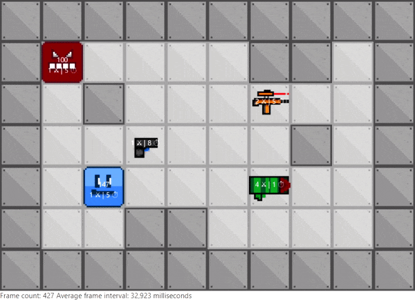
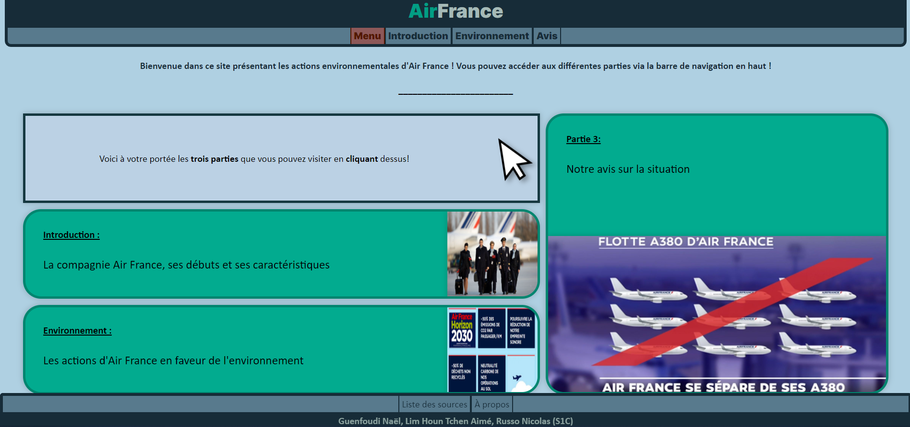
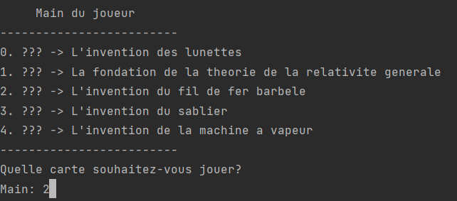
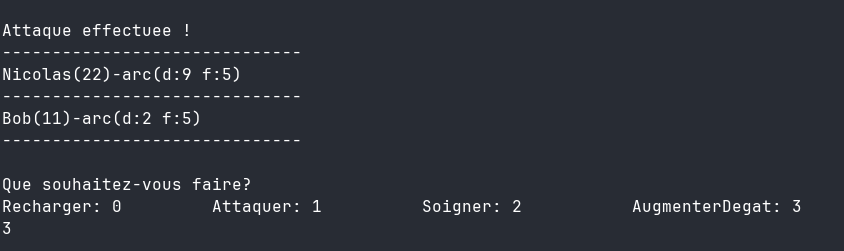

Portfolio

Projets (du plus récent au plus ancien)
2021 - Labyrinth Java
Voici un jeu réalisé en groupe durant plusieurs semaines. Le but était de réaliser un jeu de labyrinthe en y incluant nos propres idées. Nous sommes allés sur un jeu où le personnage principal doit éliminer tous les monstres du labyrinthe. Pour cela, des armes avec des statistiques différentes (dégâts, cooldown) sont présentes sur la carte.
Langage utilisé : Java
2021 - Site Air France
Voici le premier site effectué pour un projet de groupe. Il s'agit d'un site vitrine présentant AirFrance, ses caractéristiques et son histoire.
Langage utilisé : HTML/CSS
2021 - Timeline CLI

Et voici le deuxième jeu réalisé dans le cadre de mes études. Il reproduit le principe du jeu de société
"Timeline", qui consiste
à placer dans le bon ordre des évènements à date inconnues. Ce jeu tourne entièrement sur la ligne de
commande.
Ce projet a été réalisé en binôme, et le code est truffé de if/else.
Faut bien commencer quelque part écoutez XD
Langage utilisé : Java
2021 - TP Legolas

Voici le tout premier projet concret que j'ai fait ! C'est un jeu qui consiste en un combat tour par tour
contre un ennemi coriace et plus malin
qu'on ne puisse le penser.
C'est ce projet qui m'a lancé définitivement
dans la programmation, et je ne regrette pas une
seule seconde ce choix ^^
Langage utilisé : Java